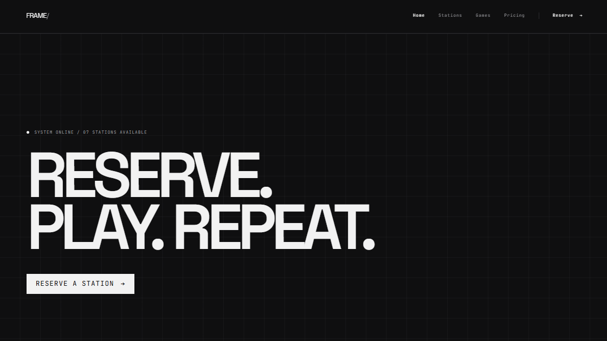
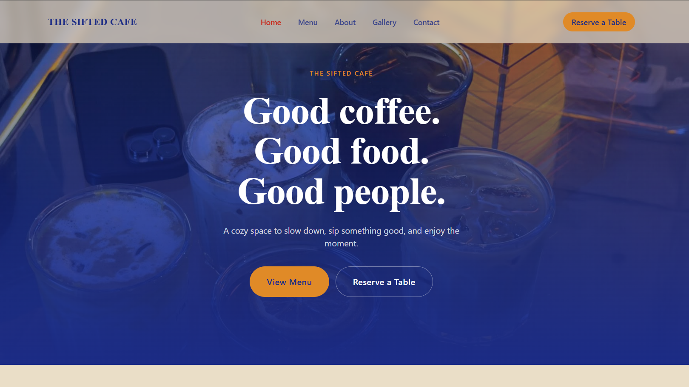
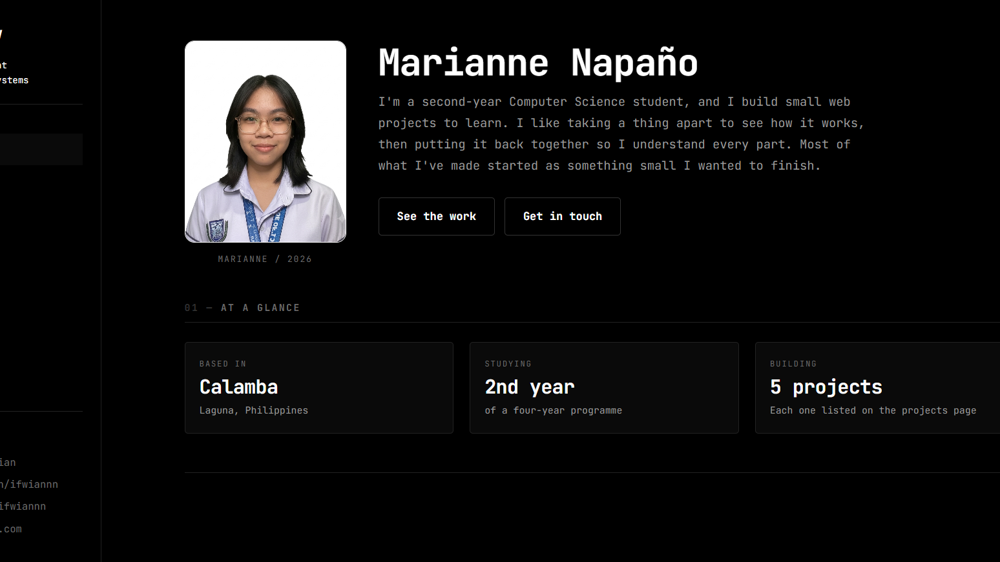
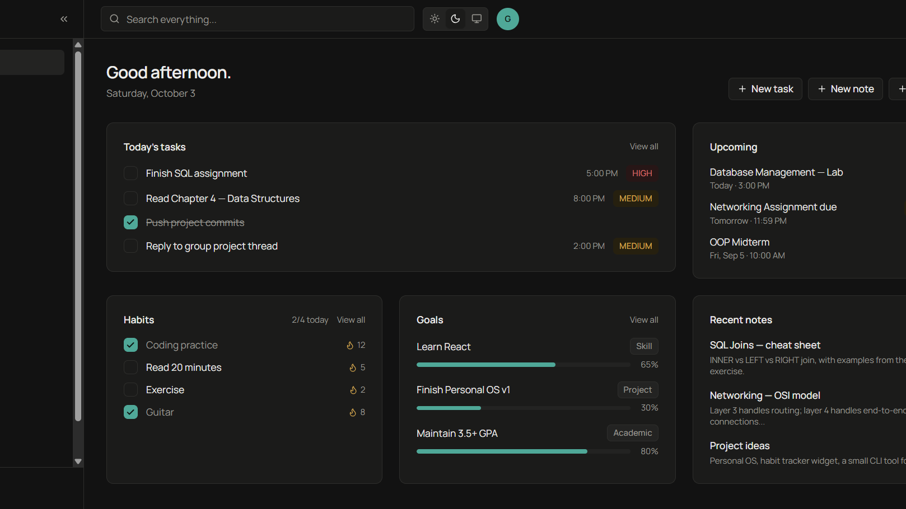

Reservation System
In progressFrontend & Backend Developer
A reservation system for booking stations at a venue, still being designed in Figma.
- JavaScript
- HTML
- Node.js
No live url yet
View Code
projects
I’m just getting started — here’s what I’m planning to build first.

Frontend & Backend Developer
A reservation system for booking stations at a venue, still being designed in Figma.

Frontend Developer
A landing page for The Sifted Cafe featuring a menu and reservation system.
Automation & Scripting
A Python script that checks the learning platform I use for class and tells me when something new appears — an announcement, a file, a grade — so I don’t have to keep logging in to check.

Front-End Developer
This site. Plain HTML, CSS and JavaScript, with no framework and no build step. I wrote it by hand to understand how the parts fit together.

Dashboard & API Integration
A personal dashboard: one screen for what I’m building, what is due, and what is running at home. Notes, files and services each get their own panel, loading from a single page.